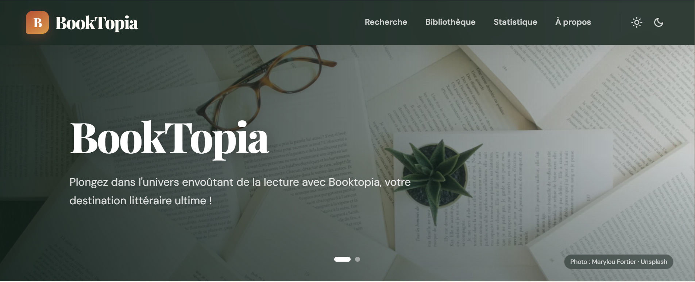
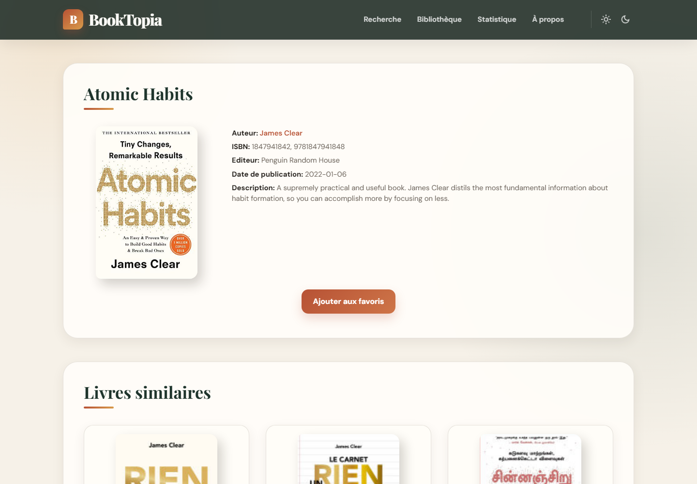

Une bibliothèque numérique moderne et résiliente
Conception, modernisation, optimisation des APIs et mise en production de BookTopia.
Synthèse exécutive
BookTopia est une application web de découverte littéraire réalisée en PHP natif. Elle agrège plusieurs sources ouvertes pour réunir recherche, fiches bibliographiques, biographies d’auteurs, recommandations, tendances et favoris dans une interface responsive cohérente.
Résultat livré
- une expérience de recherche limitée à cinq pages claires et navigables ;
- des fiches livres enrichies avec couverture de secours et recommandations ;
- des biographies francophones et une sélection d’ouvrages par auteur ;
- une bibliothèque personnelle présentée sous forme d’étagères ;
- des tendances et classements construits à partir de données d’API ;
- un comportement dégradé propre quand un fournisseur externe est indisponible.
Positionnement technique
L’architecture reste volontairement simple : aucun framework, aucune dépendance Composer et aucune base de données obligatoire. PHP assure le rendu serveur et l’orchestration des données ; JavaScript gère les interactions ; le système de fichiers prend en charge statistiques, préférences et cache.
Sommaire
- Contexte, vision et objectifs
- Périmètre fonctionnel
- Expérience utilisateur et direction artistique
- Architecture technique
- APIs externes et qualité des données
- Performance, cache et résilience
- Sécurité et protection des données
- Déploiement et exploitation
- Validation et assurance qualité
- Bilan, limites et feuille de route
AMELIORATIONS_AVANT_PUBLICATION.md.Contexte, vision et objectifs
Le projet est né dans le cadre d’un travail universitaire de développement web. Son objectif pédagogique initial consistait à mobiliser HTML5, CSS3, JavaScript et PHP autour de formats d’échange JSON/XML et de services web publics. La version 2026 conserve ce socle tout en visant un niveau de finition adapté à une publication réelle.
Problème traité
Les informations utiles à la découverte d’un livre sont dispersées entre catalogues, encyclopédies et classements. BookTopia rassemble ces informations sans tenter de remplacer les fournisseurs : l’application joue le rôle d’interface éditoriale, relie les données et maintient une expérience homogène.
Objectifs produit
Contraintes structurantes
- hébergement mutualisé et ressources serveur limitées ;
- dépendance à des APIs dont les quotas et temps de réponse varient ;
- absence de base de données et de gestion de comptes ;
- compatibilité PHP 8+, cURL et GD ;
- préservation de l’architecture et de la logique métier historiques.
Périmètre fonctionnel
| Parcours | Fonctions principales | Source |
|---|---|---|
| Accueil | Hero quotidien, tendances, dernières sorties, livres populaires et dernière consultation. | Unsplash, OpenLibrary, Google Books |
| Recherche | Recherche par titre/auteur, dix résultats par page, maximum cinq pages. | Google Books |
| Détail | Couverture, auteur, ISBN, éditeur, date, description, favoris et similaires. | Google Books |
| Auteur | Biographie en français, portrait, top de livres et couvertures de secours. | Wikipédia, OpenLibrary, Google Books |
| Bibliothèque | Favoris persistants côté navigateur, affichage responsive en étagères. | Stockage client + Google Books |
| Statistiques | Consultations, auteurs et recherches visualisés sous forme de graphiques. | CSV local + JpGraph |
| Tech | APOD, informations techniques et localisation approximative. | NASA, IPinfo/IP2Location |
Principes d’expérience
- chaque couverture dispose d’un placeholder local en cas d’erreur ;
- les liens internes conservent les paramètres utiles, notamment le thème ;
- les messages d’indisponibilité remplacent les warnings techniques ;
- les données distantes sont échappées avant toute insertion dans le HTML ;
- les éléments non essentiels utilisent le chargement différé.
Expérience utilisateur et direction artistique
La nouvelle identité associe un vert profond à des accents orange et dorés. Les titres sérifés évoquent l’édition, tandis que les composants arrondis, espacements réguliers et transitions discrètes apportent un rendu contemporain.

Page d’accueil : navigation, hero éditorial et contenus issus des APIs.
Fiche détaillée et bibliothèque

Fiche d’Atomic Habits : données bibliographiques, couverture et recommandations.
Choix d’interface notables
- le titre d’un livre est limité visuellement dans les cartes afin de préserver le rythme des grilles ;
- la bibliothèque reprend la métaphore de l’étagère sans sacrifier la lisibilité sur mobile ;
- la pagination expose clairement l’état courant et limite l’exploration à cinq pages ;
- le bouton de retour en haut est positionné pour ne pas masquer les actions flottantes ;
- les thèmes clair et sombre utilisent la même hiérarchie visuelle.
Architecture applicative
Organisation du dépôt
BookTopia/ ├── assets/ captures destinées au dépôt ├── docs/ rapports et documentation ├── src/ racine web publique │ ├── include/ helpers, header et footer │ ├── images/ visuels et fallbacks locaux │ ├── js/app.js interactions côté client │ ├── jpgraph/ moteur de graphiques embarqué │ ├── index.php accueil │ ├── page-de-recherche.php résultats et pagination │ ├── details.php fiche livre │ └── data_auteur.php fiche auteur └── storage/ configuration locale non publique
Responsabilités
functions.inc.php centralise le stockage, l’échappement, les appels HTTP, le cache et les agrégations principales. Les pages restent responsables de leur rendu et réutilisent un en-tête et un pied de page communs.
APIs externes et qualité des résultats
| Service | Usage | Optimisation / repli |
|---|---|---|
| Google Books | Recherche, identifiants et détails. | fields, projection=lite, requêtes titre/auteur précises, placeholder local. |
| OpenLibrary | Tendances, popularité, œuvres d’un auteur. | Champs restreints, couvertures grand format, listes locales critiques. |
| Wikipédia REST | Biographies et portraits. | Priorité à l’édition française, traduction de repli, bio générique si échec. |
| Unsplash | Deux visuels éditoriaux du hero. | Renouvellement quotidien, attribution, copie en cache, visuels locaux de secours. |
| NASA / IP | Contenus de démonstration technique. | Page isolée, clés optionnelles, messages neutres en cas d’indisponibilité. |
Exemple de précision bibliographique
Pour associer un résultat OpenLibrary à Google Books, la recherche combine une contrainte exacte sur le titre et l’auteur :
intitle:"Atomic Habits" inauthor:"James Clear" maxResults=1 · printType=books · projection=lite fields=items(id)
Une validation normalisée du titre et de l’auteur limite les correspondances approximatives. Si aucun résultat fiable n’est trouvé, l’identifiant reste nul et l’interface conserve un état navigable.
Qualité des images
Les couvertures OpenLibrary utilisent la variante -L.jpg. Les miniatures Google Books sont forcées en HTTPS. Les attributs onerror basculent vers des SVG locaux pour supprimer les zones vides.
Performance, cache et résilience
Cycle d’un appel externe
- une URL identique est servie immédiatement depuis la mémoire durant la requête PHP ;
- le fichier
sha1($url).jsonest réutilisé pendant 900 secondes ; - au-delà du TTL, une requête cURL courte tente de rafraîchir les données ;
- en cas d’échec, une donnée périmée exploitable ou un fallback local est privilégié ;
- aucun warning réseau n’est envoyé au navigateur.
Réduction des appels
Les sélections critiques connues conservent leurs identifiants Google lorsque cela évite une recherche supplémentaire. Unsplash n’est renouvelé qu’une fois par jour. Les images secondaires utilisent loading="lazy" et decoding="async".
Sécurité et protection des données
| Risque | Mesure actuelle | État |
|---|---|---|
| Injection HTML/XSS | Helper e(), encodage des URLs et validation des paramètres attendus. | Réalisé |
| Secrets publics | config.json exclu de Git ; stockage privé ou dossier protégé en production. | Réalisé |
| Listing et fichiers CSV | Options -Indexes et refus d’accès Apache aux configurations, CSV et info.php. | Réalisé |
| Écriture concurrente | Verrouillage flock() pour le compteur et les journaux CSV. | Réalisé |
| Transport | Site public servi sous HTTPS avec certificat installé. | Réalisé |
| En-têtes renforcés | CSP, HSTS et politique de permissions à compléter selon l’hébergeur. | À renforcer |
Données personnelles
Le projet journalise encore l’adresse IP associée à certaines recherches statistiques. Avant une diffusion plus large, il est recommandé de supprimer cette collecte ou de l’anonymiser, de documenter la durée de conservation et d’ajouter une information de confidentialité.
Gestion des secrets
Le dépôt ne contient que config.example.json. Les clés et identifiants réels doivent être renouvelés dès qu’ils ont été transmis hors d’un canal sûr, stockés uniquement sur la machine ou l’hébergement cible et ne jamais être intégrés à une archive de partage.
Déploiement et exploitation
Environnement cible
Le site public est déployé sur un hébergement mutualisé InfinityFree et exposé via booktopia.fr. Le DNS du domaine pointe vers l’hébergeur et le certificat TLS est géré depuis son panneau.
Structure attendue en production
booktopia.fr/
└── htdocs/
├── index.php
├── .htaccess
├── include/
├── images/
├── jpgraph/
└── .booktopia_storage/
├── .htaccess
├── config.json
├── *.csv
└── cache quotidien
Le contenu de src/, et non le dossier lui-même, est copié dans htdocs. Le helper project_storage_path() détecte cet environnement et utilise le stockage protégé compatible avec les contraintes de l’offre.
Pré-requis
- PHP 8 ou supérieur ;
- extensions cURL, JSON, mbstring et GD ;
- écriture autorisée sur le stockage et le cache API ;
- réécriture/contrôle d’accès Apache compatibles avec
.htaccess.
Validation et assurance qualité
| Contrôle | Critère | État au 18/08/2026 |
|---|---|---|
| Syntaxe PHP | Tous les fichiers applicatifs passent php -l. | Validé |
| Navigation | Accueil, recherche, détail, auteur, bibliothèque, statistiques, tech, à propos. | Validé |
| API indisponible | La page continue avec message ou placeholder, sans erreur fatale. | Validé |
| Responsive | Contrôle visuel sur téléphone, tablette et bureau. | Validé |
| HTTPS | Certificat installé et accès public sécurisé. | Validé |
| Tests automatisés | Tests unitaires, intégration et parcours navigateur en CI. | À créer |
Scénarios de non-régression
- rechercher Atomic Habits, ouvrir la fiche et vérifier couverture et similaires ;
- ouvrir James Clear et vérifier portrait, biographie française et trois ouvrages ;
- ajouter/supprimer un favori puis recharger la bibliothèque ;
- naviguer sur les cinq pages de résultats sans perdre la requête ni le thème ;
- simuler l’indisponibilité d’une API et vérifier les fallbacks ;
- contrôler l’absence d’accès HTTP aux CSV et au fichier de configuration.
Résultats et enseignements
La modernisation transforme un prototype académique en une application publique cohérente, plus rapide et nettement plus robuste, tout en respectant son architecture procédurale et sa logique historique.
- identité visuelle homogène ;
- agrégation de données utile ;
- cache efficace et fallbacks ;
- déploiement simple ;
- dépôt documenté.
- pas de comptes utilisateurs ;
- favoris propres au navigateur ;
- statistiques sur fichiers CSV ;
- dépendance aux fournisseurs ;
- tests encore manuels.
Apprentissages
Le principal enjeu n’a pas été l’appel d’une API isolée, mais la coordination de plusieurs sources aux modèles différents. Le cache, les timeouts, la sélection stricte des champs, l’échappement HTML et les données de repli sont devenus des composants essentiels du produit.
Le déploiement a également montré l’importance de distinguer racine publique, stockage privé, secrets de configuration, DNS et certificat TLS. Ces préoccupations font désormais partie de la documentation opérationnelle.
Feuille de route priorisée
| Priorité | Action | Bénéfice |
|---|---|---|
| P0 | Renouveler toutes les clés et tous les identifiants ayant été partagés, puis vérifier l’historique Git. | Réduction du risque d’abus et de quota consommé. |
| P1 | Anonymiser ou supprimer les IP dans les statistiques ; formaliser la conservation. | Confidentialité et conformité. |
| P1 | Ajouter CSP, HSTS, Referrer-Policy et Permissions-Policy après test. | Durcissement navigateur. |
| P1 | Créer une suite de tests PHP et des smoke tests des pages critiques. | Déploiements plus sûrs. |
| P2 | Automatiser lint, contrôle des secrets et validation des liens dans GitHub Actions. | Qualité continue. |
| P2 | Ajouter une purge bornée des anciens caches et une rotation des CSV. | Stockage maîtrisé. |
| P3 | Étudier des comptes utilisateurs et un stockage structuré si l’audience le justifie. | Synchronisation multi-appareils. |
Conclusion
BookTopia atteint son objectif : proposer une découverte littéraire claire, agréable et tolérante aux pannes. La version 2026 constitue une base publiable, documentée et évolutive, avec une liste transparente des améliorations restant à mener.
Références techniques
Configuration locale
{
"link_api": "https://www.googleapis.com/books/v1/volumes",
"key_api": "",
"unsplash_key": "",
"nasa_key": "",
"ip2location_key": "",
"ipinfo_token": ""
}
Les valeurs réelles ne doivent jamais apparaître dans le dépôt ou dans le rapport.
Démarrage
Copy-Item storage/config.example.json storage/config.json php -S localhost:8000 -t src
Liens
- Application : https://booktopia.fr
- Dépôt : https://github.com/Aybskt/BookTopia
- Google Books : developers.google.com/books
- OpenLibrary : openlibrary.org/developers/api
- Wikimedia REST : mediawiki.org/wiki/API:REST_API
Crédits
Conception et développement : Ayoub ABDELLI et Lounis BOUHADOUN. Les métadonnées, images et contenus tiers restent soumis aux conditions de leurs fournisseurs respectifs.